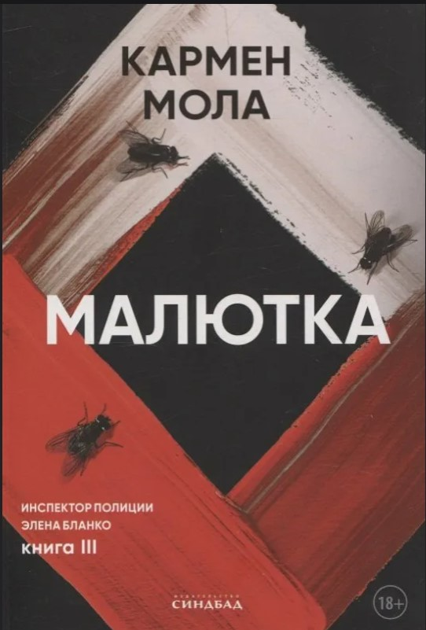
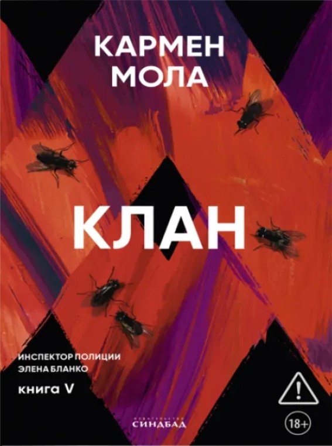

Навигация — Книги Кармен Мола
НАВИГАЦИЯ
|
О САЙТЕ
|
|
Информационный сайт о книгах Кармен Молы, авторах коллективного псевдонима и цикле об инспекторе Елене Бланко.
|
|
Книги Кармен Мола
КАРМЕН МОЛА
|

ОБ АВТОРАХ
Кармен Мола — коллективный псевдоним трёх испанских писателей и сценаристов: Хорхе Диаса, Антонио Мерсеро и Агустина Мартинеса.
Трое друзей-сценаристов объединились для написания криминальных триллеров в 2017 году. Их первый роман под псевдонимом Кармен Мола — «Цыганская невеста» — вышел в 2018 году.
До 2021 года издатель и литературный агент представляли Кармен Молу как реальную личность — женщину-профессора из Мадрида, мать троих детей, которая в свободное время пишет детективы.
Создавался целый образ: публиковались поддельные интервью, на сайте издательства разместили фото женщины со спины, якобы Молы. Тайна раскрылась в 2021 году во время церемонии вручения престижной испанской литературной премии
«Планета» за лучший роман. Авторам пришлось лично выйти на сцену и получить награду в размере миллиона евро за исторический триллер «Зверь». На церемонии присутствовал король Испании.
КНИГИ, О КОТОРЫХ РАССКАЗАНО НА САЙТЕ
|
АВТОРЫ КАРМЕН МОЛА
|
|
Имя автора
|
Дата рождения
|
Профессия
|
|
Хорхе Диас
|
1962 год
|
Писатель, журналист, сценарист и режиссёр
|
|
Антонио Мерсеро
|
1969 год
|
Писатель, журналист и сценарист
|
|
Агустин Мартинес
|
1975 год
|
Писатель, сценарист, создатель и шоураннер
|
 Цыганская невеста
Цыганская невеста
«Цыганская невеста. Инспектор полиции Элена Бланко. Книга I» — детективный триллер
о двойном преступлении, которое ставит под сомнение старый приговор и втягивает полицию
в мир чужих семейных правил, страха и молчания. Кармен Мола открывает этой книгой цикл об
инспекторе полиции Элене Бланко и сразу задаёт жёсткий ритм: современный Мадрид здесь
соседствует с закрытым цыганским кланом, а частная трагедия быстро становится делом с
опасными ответвлениями. В центре не только поиск преступника, но и столкновение традиций
с личной свободой, давление семьи и цена ошибок, которые не остаются в прошлом. На этом фоне
сама Элена — не кабинетный следователь, а человек с тяжёлым личным грузом, резкими привычками и
цепким взглядом на то, что другие предпочли бы не замечать.
Накануне свадьбы убивают Сусану Макайя. Способ преступления почти дословно повторяет смерть её
старшей сестры Лары, погибшей семь лет назад при тех же обстоятельствах. Проблема в том, что за убийство
Лары уже осуждён человек, который отбывает пожизненный срок. Поэтому расследование превращается не только
в поиск нового преступника, но и в проверку старого дела. Следственная группа заново поднимает материалы,
сопоставляет детали двух преступлений и разбирает связи внутри семьи Макайя. Под подозрением оказываются близкие,
знакомые, люди из окружения клана. Чем дальше продвигается следствие, тем яснее становится: за внешней сплочённостью
семьи скрываются конфликты, давление традиций и вещи, о которых здесь не принято говорить вслух.
|
Купить книгу можно по ссылке:
Читай-город
ОТЗЫВЫ
Юлия
★ ★ ★ ★ ★
Это было шокирующе и по новому, никогда подобного не читала,
это лучший детектив из всего, что я читала за последние годы.
Интрига держит в напряжении с самой первой страницы, до последнего
не понимаешь, где правда, где ложь. Жестокость шокирует и от этого
интерес растет еще больше, что же еще авторы для нас приготовили.
Кстати, удивило, что под таким казалось бы женским псевдонимом, пишут несколько мужчин.
|
Светлана
★ ★ ★ ★ ★
Сначала показалась мне немного скучной и долго раскачивалась, но потом
я втянулась. История довольно мрачная и местами жёсткая, некоторые моменты
было неприятно читать. При этом мне понравилось само расследование, постоянно
хотелось понять, что же произошло и кто во всём этом виноват. В целом хороший
детектив, и после первой книги захотелось узнать, что будет дальше с героями.
|
Анастасия
★ ★ ★ ★ ★
К прочтению советую. Из плюсов: Интересный сюжет.
Динамичное повествование.
Неожиданные повороты.
Оригинальные нотки.
|
 Пурпурная сеть
Пурпурная сеть
«Пурпурная сеть» – вторая книга о расследованиях инспектора полиции Мадрида
Элены Бланко. После того, как в «Цыганской невесте» Элена нападает на след
преступной группировки «Пурпурная сеть», в новой книге она продолжает разбираться
в этом непростом деле. Но почему оно настолько важно для нее, не догадывается даже
никто из ее коллег. Именно «Пурпурная Сеть» когда-то похитила ее сына Лукаса и,
вероятно, втянула в жестокие пытки и убийства. Роман начинается с визита нескольких
полицейских шестнадцатилетнего Даниэля, которые застают его за просмотром «реалити-шоу»,
где жестоко истязают девушку. Их попытки определить, откуда ведется трансляция, не
приводят к успеху, в итоге девушка умирает. Возможно, один из убийц на экране и есть
сын Элены. Удастся ли Элене Бланко остановить группировку и вернуть собственного сына?
|
Купить книгу можно по ссылке:
Читай-город
ОТЗЫВЫ
Мира
★ ★ ★ ★ ★
Просто гениальная история. Читала и не могла оторваться.
Вторая часть цикла порадовала. Сюжет интригующий, очень
много внезапных сюжетных поворотов. То как работает ОКА и
Элена это просто сногсшибательно. В этой части авторы показывают
нам, насколько сильная связь между матерью и ребенком. Обожаю
слог авторов, читается на одном дыхании. Все очень советую этот цикл.
|
Анастасия
★ ★ ★ ★ ★
Отличная книга, но ужасная история, которая, к сожалению, актуальна и на сегодняшний день.
В целом «Пурпурная сеть» — книга для тех, кто любит жёсткие, атмосферные триллеры с неожиданными
поворотами и мрачной психологической составляющей. Не самая лёгкая история, но если хочется чего-то
действительно напряжённого — рекомендую.
От финала я была в шоке, хоть и ожидала подобное
|
Алина
★ ★ ★ ★
Здесь у нас неплохой детектив, в котором процесс расследования показан доступно,
понятно и сам по себе логичен. Меня это порадовало, потому что не люблю детективы
где ничего не ясно и половина вещей не стыкуется или их происхождение вообще не раскрыто.
Однако порой трудно читать сцены особой жестокости. Книжка не для слабонервных.
|
|

Малютка
«Малютка» — криминальный триллер о возвращении к делу, от которого уже пытались уйти,
и о цене чужих тайн. После событий, связанных с «Пурпурной сетью», в жизни Элены Бланко
остаются утрата, надлом и попытка начать всё заново вдали от полиции. Кармен Мола ведёт
историю между Мадридом и суровой сельской Испанией, где рядом существуют полицейская рутина,
закрытые сообщества и насилие, которое долго прячут за обычным бытом. Личное напряжение
героев здесь тесно связано с новым расследованием.
В канун китайского Нового года похищают Ческу Ольмо, коллегу и подругу Элены, которая
заняла её место в отделе криминалистической аналитики. Ради поисков Элена возвращается
к работе и снова собирает команду, чтобы понять, кто стоит за похищением и почему удар
пришёлся именно по Ческе. Следствие быстро уводит не только в полицейские архивы, но и в
прошлое самой пропавшей, где слишком много недосказанного. Параллельно возникает линия испанских
фермеров Антона и Хулио, связывающая расследование с темами бедности, уязвимости и жестокости в замкнутой среде.
|
Купить книгу можно по ссылке:
Читай-город
ОТЗЫВЫ
Ева
★ ★ ★ ★ ★
Книги этого автора очень интересные и захватывающие.
Сюжет динамичный, запоминающийся. Заставляет переживать за героев книги и в какой-то
момент сочувствовать. Для любителей детективов и острых сюжетов - хорошая история)
Мне очень зашло. Читается очень легко, прямо на одном дыхании. За 2-3 дня прочесть не
составит труда. Абсолютно не пожалела, что когда-то купила первую часть и начала знакомство с циклом про инспектора Элену)
|
Александр
★ ★ ★
Очень смешанные чувства оставила третья часть цикла.
С одной стороны, сюжет действительно захватывает и держит в напряжении, книгу
просто невозможно отложить в сторону, пока не узнаешь, что будет дальше. С другой стороны,
книга наполнена таким количеством всевозможной «чернухи», что морально сложно справиться с эмоциями!
Местами глаза на лоб лезли от того, что происходило на страницах, особенно в конце. Читать с большой осторожностью!
|
Мария
★ ★ ★ ★ ★
Третья часть вышла очень мрачной. Авторам до конца книги удалось
продержать напряжение. Очень интересной, но очень много сцен жестокости
и насилия, достаточно детально описанных в книге, что прям аж до мурашек.
Расследование очень динамичное, много тайн открывается, хотя я до последнего надеялась
на хороший конец. Но все равно, рекомендую, скучно не будет
|
 Молчание матерей
Молчание матерей
«Молчание матерей. Книга 4.» — криминальный триллер о расследовании серии жестоких убийств,
где тела мужчин превращены в пугающие улики, а за каждым шагом следствия тянется тема материнства,
боли и насилия. В книге Кармен Мола, коллективного псевдонима трёх испанских авторов, дело специального
полицейского отдела быстро выходит за пределы обычной служебной работы. Мадрид и Ла-Корунья становятся пространством,
где преступление связано не только с частной трагедией, но и с системой, умеющей хранить молчание. Это четвёртая книга цикла
об Элене Бланко, и здесь личная уязвимость героев сталкивается с холодной логикой власти, торговли людьми и внутреннего разложения институтов,
которые должны защищать.
За несколько дней полиция находит в Мадриде и Ла-Корунье двух убитых мужчин с одинаково чудовищной деталью: в живот каждого зашит плод, а анализ
ДНК подтверждает отцовство погибших. Элена Бланко и её команда берутся за дело, которое с самого начала не похоже на обычную серию убийств.
Поиск виновных ведёт следователей через ложные версии, служебные конфликты и связи, уходящие к верхним этажам власти. Параллельно развивается история
Виолетты, молодой мексиканки, которую обманом вывозят в Испанию и втягивают в систему сексуального рабства.
|
Купить книгу можно по ссылке:
Читай-город
ОТЗЫВЫ
Антон
★ ★ ★ ★
после предыдущих трех книг данного цикла, я понял, что авторы уже начали сдавать позиции и прошлые книги была читать намного интереснее,
так как сюжет был более динамичный, не было зацикленности на одном, также немного разочаровало, что очень много отсылок на следующую часть,
буквально машут перед глазами, травят, а потрогать не дают, но при этом плюс, что не терпится после этого прочитать следующую часть
|
Инна
★ ★ ★ ★ ★
Очень ждала продолжение истории и не ошиблась,все также круто написано,но единственное,
что почти сразу стало понятно,кто главные «злодей» в книге. Книга не такая жуткая,как предыдущие,
но странное ощущение при прочтение было.
Также очень интересно читать подвязку к следующей части. Сплетение любовной и детективно линии прекрасно,ничто не перекрывает друг друга.
|
Кристина
★ ★ ★ ★ ★
Жуткая, но невероятно интересная книга. Читала и предыдущие части, честно говоря, ради этой – настолько заинтриговала аннотация к книге.
В книге хорошо все: динамичный сюжет, интересное расследование, постоянное напряжение и неожиданные повороты. Мне нравится, что в книгах
прослеживаются и социальные вопросы. Например, в этой поднимаются вопросы суррогатного материнства, торговли людьми и миграция.
|
|

Клан
«Клан» — криминальный триллер и роман нуар о противостоянии инспектора Элены Бланко и её отдела преступной сети,
проникшей в полицию, суды, политику и бизнес. Действие разворачивается в Мадриде, где расследование быстро выходит
за пределы обычного дела и сталкивает следствие с закрытым сообществом людей, связанных властью, деньгами и насилием.
Кармен Мола ведёт историю в напряжённом ритме: служебные границы стираются, доверие внутри системы оказывается под вопросом,
а любой шаг может обернуться ударом изнутри. К мадридской линии добавляются африканские маршруты нелегальной миграции,
торговля людьми и связи, которые тянутся далеко за пределы одного города.
После серии жестоких преступлений следствие выходит на Клан — закрытое сообщество, где рядом оказываются уголовники, чиновники,
военные, журналисты и сотрудники системы. Отдел пытается работать в условиях, когда любой шаг могут сорвать изнутри, а каждый новый
след ведёт не к одному преступнику, а к целой структуре. Ситуацию обостряет обвинение в убийстве полицейского, из-за которого привычный
порядок расследования ломается. Параллельно дело затрагивает личную боль Анхеля Сарате и события, связанные с Либерией, что придаёт
истории дополнительный масштаб.
|
Купить книгу можно по ссылке:
Читай-город
ОТЗЫВЫ
Ангелина
★ ★ ★ ★ ★
Кармен Мола это мое разочарование. Главные герои которые работают в СУПЕР крутом тайном отделе полиции и расследуют загадочные
и страшные дела ведут себя как подростки. И читается не как книга , а как будто кто то сюжет фильма переписал просто. Язык очень
сухой и когда читаешь погружения как такого нет и не возникает сопереживания к ситуациям вообще. всем советую
|
Валерия
★ ★ ★ ★
Заключительная книга в цикле об инспекторе Элене Бланко, вообще все 4 предшествующие книги произвели на меня впечатление.
Для любителей детективов с жуткими и ужасающими описаниями преступлений самое то. Но, к сожалению, заключительная часть
цикла показалась мне довольно скучной, по сравнению с остальными
Финал меня убивает, так как хотелось все таки, чтобы Элена обрела счастье, но в итоге у нее забирают все, что имело для нее смысл
|
Елена
★ ★ ★ ★ ★
Как жалко, что это последняя книга этой шикарной серии! Я с удовольствием читала все пять книг серии, наслаждаясь ну
буквально каждой строчкой! Пятая книга ни в чем не уступает предыдущим. Все на таком же высоком уровне. Жестокие сцены,
отвратительные персонажи, принципиальные главные герои. Авторы никого не жалеют. Ни своих героев, ни читателей. Бедная Элены Бланко,
сколько ей пришлось пережить...
|
КНИГИ ЦИКЛА «ИНСПЕКТОР ЕЛЕНА БЛАНКО»
|
ЦИКЛ «ИНСПЕКТОР ЕЛЕНА БЛАНКО»
|
|
№
|
Название книги
|
Год выхода
|
Краткое описание сюжета
|
Оценка пользователей
|
|
1
|
Цыганская невеста
|
2018
|
Первое расследование инспектора Елены Бланко.
|
★ ★ ★ ★ ★
|
|
2
|
Пурпурная сеть
|
2019
|
Продолжение расследования преступной группировки «Пурпурная сеть».
|
★ ★ ★ ★ ☆
|
|
3
|
Малютка
|
2020
|
Елена Бланко возвращается к работе после событий предыдущей книги.
|
★ ★ ★ ★ ☆
|
|
4
|
Молчание матерей
|
2022
|
Новое расследование приводит команду Элены Бланко к серии связанных преступлений.
|
★ ★ ★ ★ ☆
|
|
5
|
Клан
|
2024
|
Элена Бланко сталкивается с могущественной преступной организацией.
|
★ ★ ★ ★ ★
|
АВТОРИЗАЦИЯ
|
Информационный сайт о книгах Кармен Молы
|
|
Персонажи — Книги Кармен Мола
ПЕРСОНАЖИ
Элена Бланко — главный инспектор, руководитель Бригады анализа случаев ОКА
Анхель Сарате — субинспектор полиции, присоединившийся к команде
Марияхо — специалист по информатике и хакер
Ческа — полицейская, специалист по расследованиям, «perro de presa» ОКА
Радриго Ордуньо — полицейский, ветеран, бывший сотрудник GEO
Буэндия — судебный медицинский эксперт ОКА
|
|
О ПЕРСОНАЖАХ
|
|
Команда Отдела криминалистической аналитики инспектора Елены Бланко из цикла книг Кармен Молы.
|
|